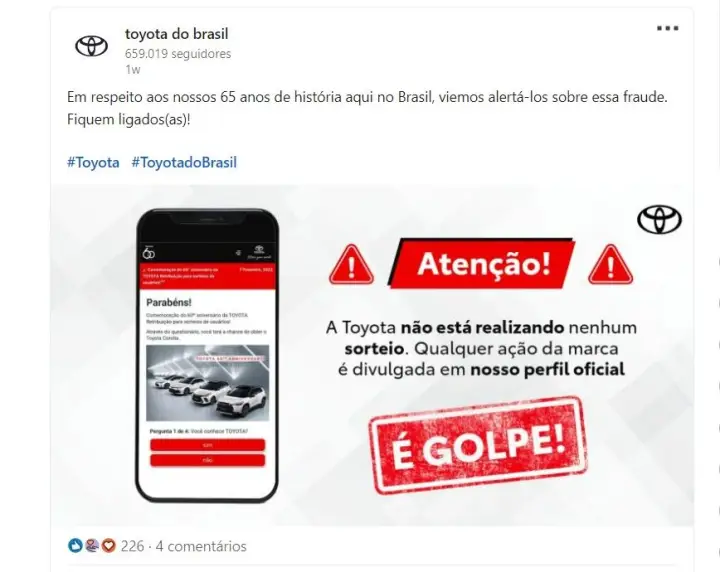
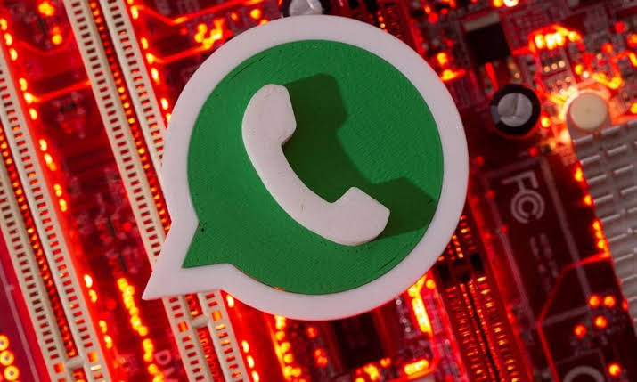

Saiba como os criminosos roubam perfis no Instagram e WhatsApp,
aprenda a se proteger e descubra o que fazer para recuperar sua conta.
Contas roubadas são usadas imediatamente para aplicar golpes em amigos e familiares. A rapidez na reação é fundamental!

Golpistas entram em contato oferecendo parcerias comerciais ou sorteios no Instagram, enviando um link que rouba a senha e derruba a sessão.

Os criminosos fingem ser de uma empresa ou operadora e pedem o código numérico de confirmação enviado por SMS para roubar o acesso ao aplicativo.
Você recebe mensagens alertando que sua conta será bloqueada a menos que clique em um link para "atualizar os dados", indo parar em páginas falsas.
Adicione uma camada extra de segurança no WhatsApp e no Instagram criando um PIN ou senha numérica pessoal obrigatória.
O código recebido por SMS ou aplicativo de mensagem é pessoal e intransferível. Nenhuma empresa legítima solicita esse número por ligação.
Antes de clicar em qualquer link recebido por direct ou mensagem, verifique com cuidado o endereço oficial da plataforma no navegador.
Tente entrar na sua conta imediatamente e alterar a senha se o invasor ainda não tiver mudado. Caso já tenha perdido o acesso, utilize os recursos oficiais de recuperação das plataformas (como o suporte do Instagram ou desinstalar e reinstalar o WhatsApp) e avise seus contatos por outros meios.